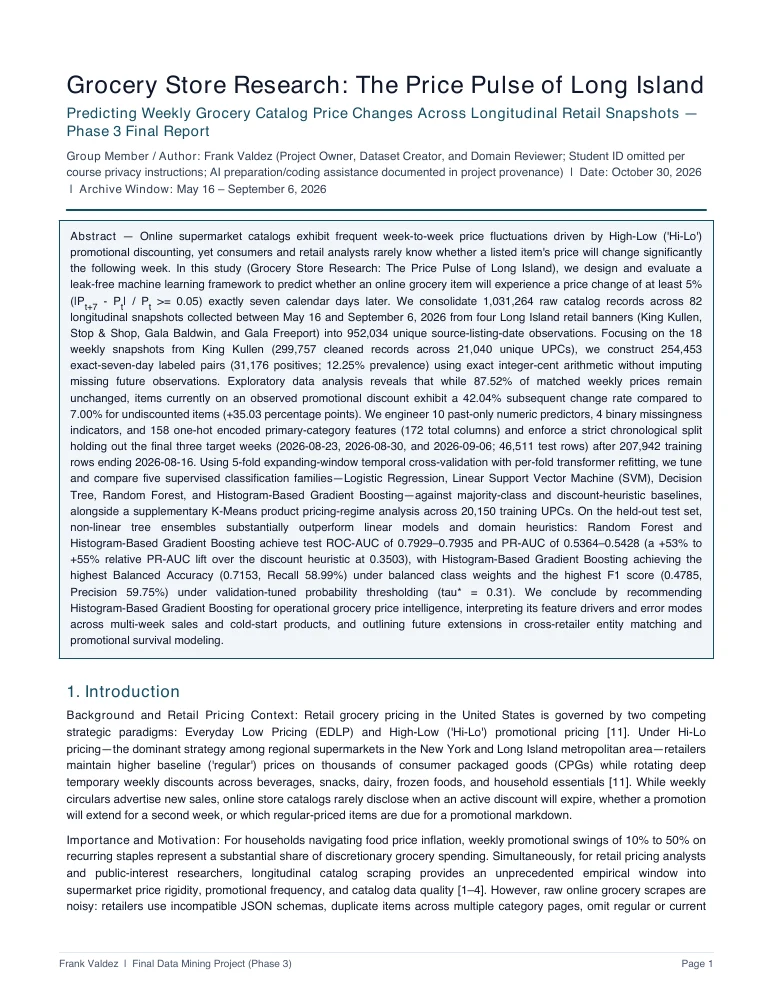
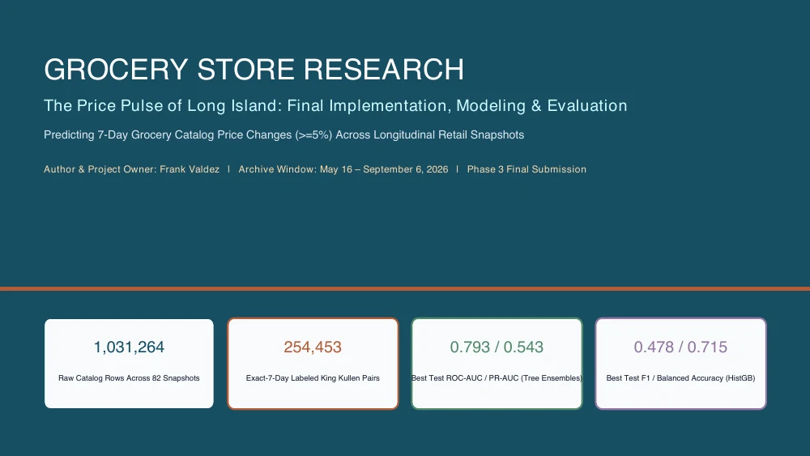
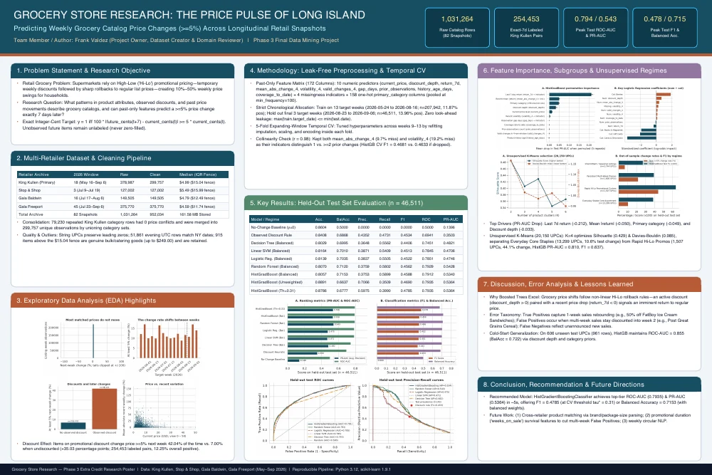
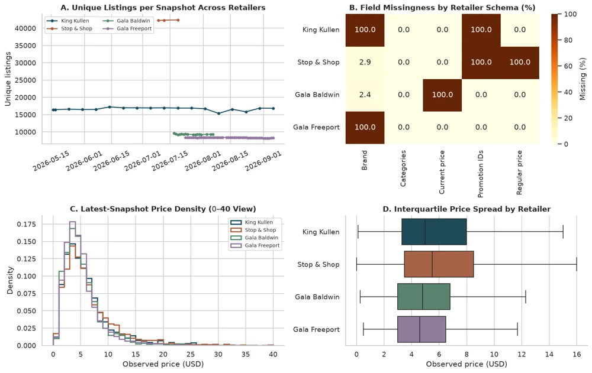

Final research report
The full study: data provenance, preparation, exploratory analysis, model evaluation, and conclusions.
Completed research · Phase 3
What can this week’s grocery prices tell us about next week?
A study of weekly price changes across Long Island grocery catalogs, from a million raw records to a carefully evaluated prediction model.
Explore the researchItems on promotion were more likely to change price by at least 5% seven days later.
The complete collection
Read the story, see the results,
or explore the implementation.

The full study: data provenance, preparation, exploratory analysis, model evaluation, and conclusions.

A guided overview of the research question, modeling approach, key findings, and recommendations.

The entire project at a glance, with visual summaries of the data, experiments, and results.

Read the Python implementation alongside its saved charts, tables, and evaluation outputs. No setup needed to view.
Behind the documents
The project brings together catalog observations from King Kullen, Stop & Shop, Gala Baldwin, and Gala Freeport. The predictive benchmark focuses on King Kullen, asking whether a product’s listed price will change by at least 5% exactly seven days later.
Five supervised model families were evaluated using past-only features, expanding-window cross-validation, and a chronological test split. The final report also explores product pricing regimes with K-Means clustering.
This archive publishes the four completed Phase 3 documents. The notebook preview includes saved outputs; rerunning the analysis requires the supporting datasets and model artifacts described in the README.